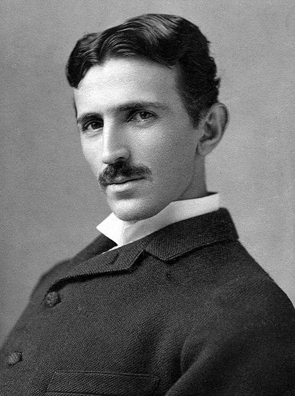
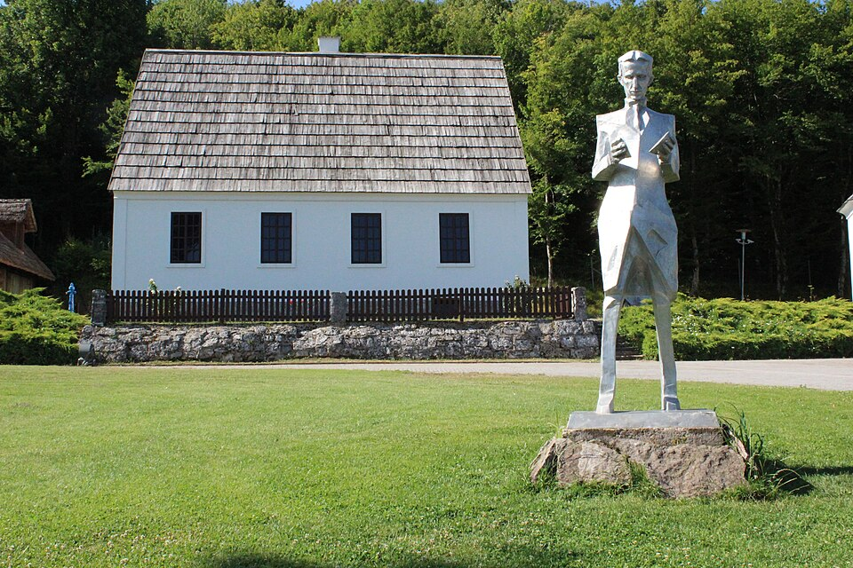
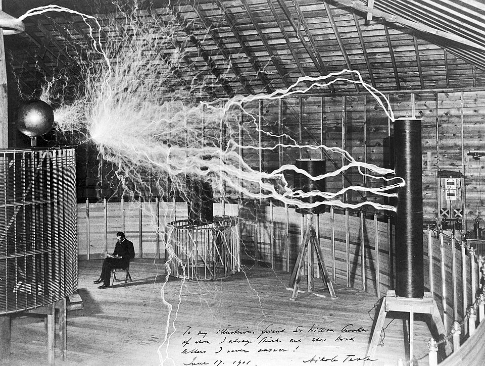
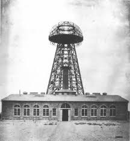

Smiljan, 1856. — New York, 1943.
|
 Portret, oko 1890. |
„Sadašnjost je njihova; budućnost, za koju sam zaista radio, je moja.“ Nikola Tesla rođen je 10. srpnja 1856. u Smiljanu u današnjoj Hrvatskoj. Sin pravoslavnog svećenika, od djetinjstva je pokazivao izniman talent za matematiku i tehniku. U New York je stigao 1884. s nekoliko centi u džepu i prijavio gotovo 300 patenata. Pobijedio je u „Ratu struja“ protiv Edisona zajedno s Westinghouseom — danas cijeli svijet koristi njegov sustav izmjenične struje. |
|
 Rodno mjesto, Smiljan |
 Laboratorij, Colorado Springs, 1899. |
 Toranj Wardenclyffe, 1904. |
| Motor na izmjeničnu strujuTemelj moderne industrije — svaki električni motor danas radi po Teslinom načelu. | Teslin transformatorRezonantni transformator visokih napona, još u upotrebi u radiotehnici i medicini. |
| RadioVrhovni sud SAD-a potvrdio Teslin prioritet nad Marconijem — 1943. godine. | Daljinsko upravljanjePrvi daljinski upravljani brod demonstriran u Madison Square Gardenu, 1898. |
| Bežični prijenos energijeToranj Wardenclyffe — vizija globalne bežične mreže, propala zbog povlačenja investitora. | Neonska rasvjetaFluorescentne i neonske cijevi demonstrirane na Svjetskoj izložbi u Chicagu, 1893. |
Tesla je umro gotovo bez prebijene pare, no 20. stoljeće izgrađeno je na njegovu radu. Godine 1960. SI jedinica gustoće magnetskog toka nazvana je teslom (T) u njegovu čast. U popularnoj kulturi simbol je usamljenog vizionarskog genija — ispred svoga vremena.
| ~300Patenata | 26Zemalja | 86Godina života | 1960.SI jedinica |
⚡ NIKOLA TESLA 1856. – 1943. ⚡
Počast čovjeku koji je elektrificirao svijet.